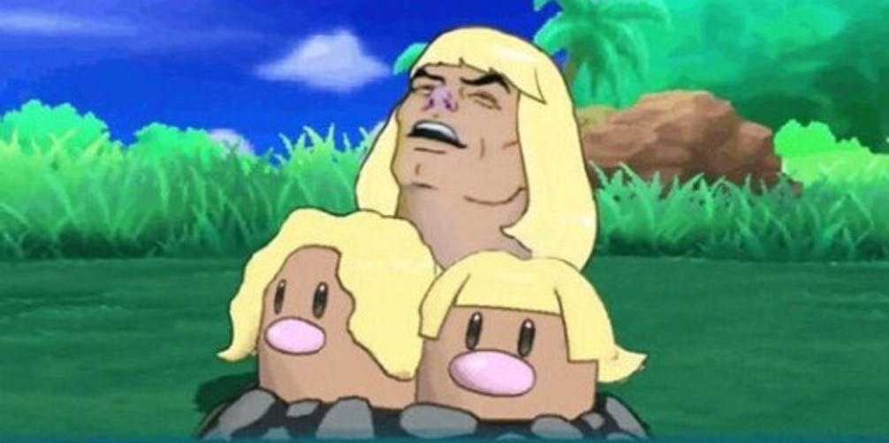

My love of memes started at the ripe young age of 8 years old. See, it all started when my younger brother got his Nintendo DSi. This opened the floodgate to memes. See, the nintendo DSi had a software called "Flipnote Hatena". On this, people could post animations animations that they made using this sketchbook software. This was how my 8-year old self discovered the first wave of the cringey, 2009, internet memes. Among these famous memes included Bad Luck Brian, The Epic Face, "Firin Mah Laser", and "This is Sparta", some of which I have include below.
As I became a younger teenager, between the ages of 13 and 15, I began to discover memes using the actual internet. This was a very, strange time for memes, as the predominant memes on there at the time were memes about Shrek, memes about a rendition of Sonic known as "Sanic", and of course, ever famous, MLG format, which stands for Major League Gaming. Memes at this time were known for being perverse, loud, sporadic, edgy, filled with screams and distorted audio, and random images edited onto eachother. The sound effects poked fun at popular internet trends of the recent past, such as "loomynarty confirmed", poking fun at the "Illuminati" trend of the late 2000s, and the Supa Hot Fire's "I'm not a rapper" sound effects. I have also included some of these memes below.
Around 2016, I transitioned into the age of what I like to call, "postmodern memes". postmodern memes often poke fun at topics such as politics, depression, and other serious topics in a lighthearted, nonchalant way. Postmodernism in memes was also the rise of irony, where people would "ironically" laugh at memes that don't actually make sense, or say controversial things for the sake of irony. My favorite example of this is the "e", meme. I have included some of these below as well.